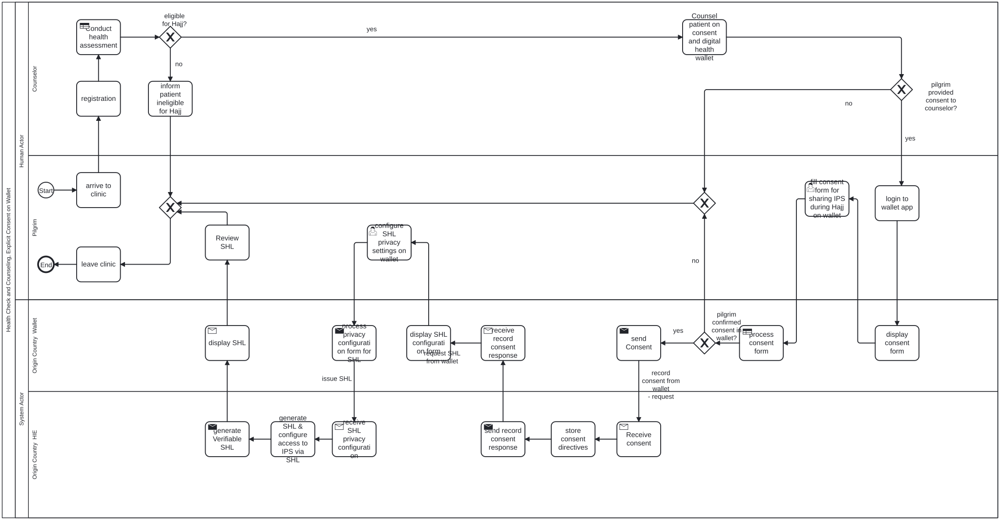
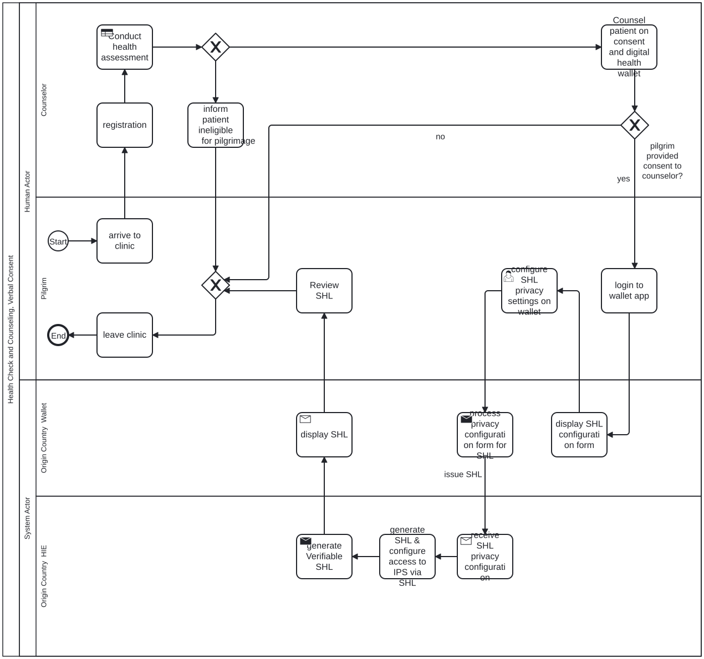
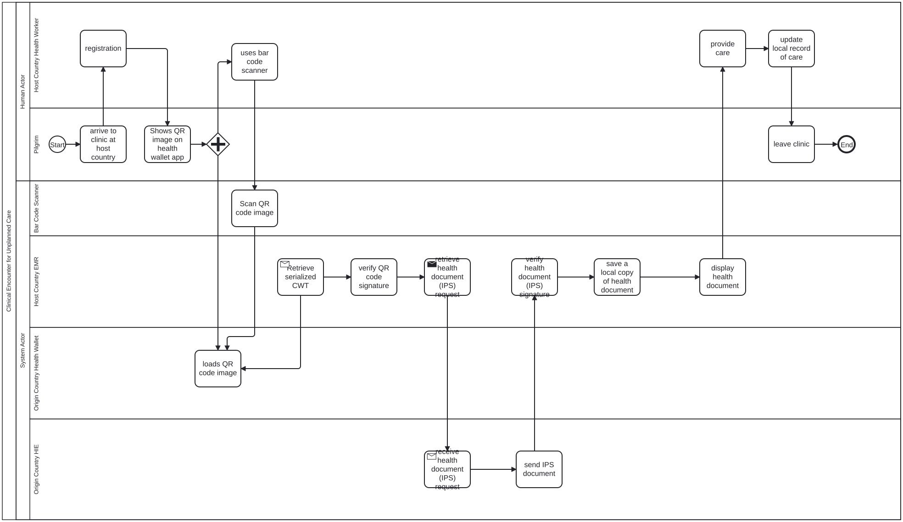

Journey map
Read across to follow one person. Read down to see everyone at one moment. Click a column to inspect it.
Publishes the public keys it signs health documents with to GDHCN, and shares its national code systems with the WHO Terminology Service.
Records the consent directive.
Assembles the IPS (conditions, medicines, allergy), issues a Verifiable Health Link to it, and signs it with a key registered with GDHCN.
Checks the request against Kamal's consent and returns the folder and the IPS.
Releases the summary for emergency access, if Kamal opted in.
Lists Malaysia's keys alongside those of every other participant, including KSA.
Supplies Malaysia's public key.
Has his health examination, listens to Dr Aisyah, and confirms on his wallet that Saudi health workers may see his summary during Hajj; sets how the link is protected.
“So the doctors there will know about my insulin. Good.”
Sees the QR code appear in his wallet as he packs.
“Everything they need is in my phone.”
Feels dizzy and weak in the heat; opens his wallet at registration and shows the QR code.
“I feel faint. Show them the phone.”
Sits and waits while the code is scanned.
“I hope it works.”
Recovers on a drip.
“I did not have to explain a thing.”
Collapses on the day of Arafat and is brought in unconscious.
Tells her, as best he remembers, what happened.
“They gave me a drip… I don't remember what else.”
Examines Kamal, finds him fit to travel, and explains what the record is, who can see it and for how long.
“He understood what he agreed to. That is what matters.”
Sees Kamal back home, with nothing in her record of his care in KSA.
“Treated in Mina? Nothing came back to me.”
Sits with him and listens.
“One less thing to worry about.”
Brings him to the facility and helps him find the QR code.
“Thank God we are close to a clinic.”
Tells Nurse Reem the passcode.
“They knew what to do with it.”
Sits beside him, relieved.
“They knew about his sugar straight away.”
Fills in what he does not remember.
“Someone should have sent it to her.”
Shows the consent form and the link's privacy settings, and sends the consent to the HIE.
Receives the QR code and keeps it ready to show.
Shows the VHL QR code.
Welcomes them at registration and asks for the QR code.
“A QR code — good, that will be quick.”
Scans the QR code into the EMR and enters the passcode; sees the signature verified.
“Verified: it really comes from Malaysia.”
Decodes the QR code and verifies its signature with Malaysia's public key.
Retrieves the VHL folder and the IPS from Malaysia's HIE, verifies the IPS, and keeps a rendered copy with the visit.
Looks up the summary by the Hajj registration number.
Reads the summary, sees the insulin and the penicillin allergy, and treats heat exhaustion and low blood sugar.
“Insulin, and allergic to penicillin. Glad I know before I start.”
Reaches Kamal's summary through the registration number and treats him.
“Without this I would be treating blind.”
Identifies Kamal and gives his Hajj registration number to the facility.
“He is one of ours. Here is his number.”
Without published keys, a Saudi clinic has no way to tell a genuine Malaysian record from a forged one.
Without consent recorded at home, nothing may be shared abroad, and the clinic in Mina starts from nothing.
Without a signed summary, a clinic abroad has only what Kamal can remember and explain.
A pilgrim who is unwell, far from home, among millions, in a language that is not his own.
Without a signature check, the clinic cannot tell a genuine record from a forged or altered one.
Treating without knowing the insulin or the penicillin allergy risks a dangerous mistake.
An unconscious pilgrim cannot show a QR code or say a passcode, and his wife is not there.
The record of care abroad, and who opened his summary, never comes home.
Both countries take part in one trust network, so each trusts the other's keys without a bilateral agreement.
Consent is given with a clinician who can explain it, and confirmed by the pilgrim on his own phone.
One signed link, issued at home, that any participating country can verify.
The QR code is on the phone he already carries, and works without him explaining anything.
The EMR verifies the signature against a key it got from the trust network, with no call to Malaysia needed.
The summary is fetched from home through the link, under the consent Kamal gave, and kept as a rendered copy with the visit.
The pilgrim can opt in to break-the-glass access on his wallet; his country's medical team can identify him.
Nothing yet: the guide does not specify a return path.
Kamal's national health wallet → Malaysia's health information exchange
Wallet to HIEOnlineMalaysia's health information exchange → Kamal's national health wallet
Wallet appOfflineKamal's national health wallet → The Mina facility's EMR
QR code on screenOfflineWHO GDHCN → The Mina facility's EMR
GDHCN trust listOnlineMalaysia's health information exchange → The Mina facility's EMR
HTTPS (VHL retrieval) across the borderOnlineDr Hafiz → Dr Faisal
Hajj registration numberOnlineMalaysia's keys and code systems are known to the trust network
Kamal's consent is recorded at home
The VHL QR code is in Kamal's wallet
The QR code is shown at registration
The VHL is verified
Kamal is treated, and a rendered copy is kept with the visit
The summary is reached without the pilgrim's phone

Health Check and SHL Issuance, Wallet ConsentBPMN
Health Check and SHL Issuance, Wallet ConsentBPMN
Health Check and SHL Issuance, Wallet ConsentBPMNKeys and codes are shared
Before anyone travels, Malaysia's signing keys and code systems reach the trust network, so a Saudi clinic can trust and read a Malaysian record months later.
The health check and the choice to share
Kamal is found fit to travel, hears who can see his Hajj Health Record and for how long, and agrees on his wallet to share it.
His summary is assembled and signed
Malaysia's HIE turns Kamal's care history into a signed patient summary and puts the link to it in his wallet as a QR code.
Taken ill in Mina
Dizzy in the heat of Mina, Kamal is brought to the Hajj health facility by Salmah and shows his QR code at registration.
Scanned and checked
Nurse Reem scans the code and enters the passcode; the EMR checks the signature with Malaysia's key from GDHCN.
His record is read and he is treated
The EMR retrieves Kamal's summary from Malaysia; Dr Faisal sees the insulin and the penicillin allergy before he treats him.
When he cannot show the code
Kamal is brought in unconscious with no one to show his code; Dr Hafiz gives his Hajj registration number and the facility reaches his summary through it.
Back home
Kamal is home and well, but his GP does not know he was treated in Mina.